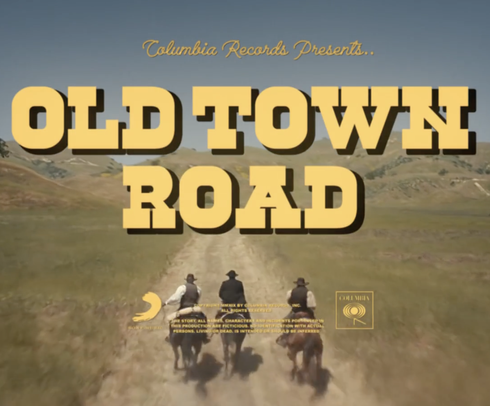
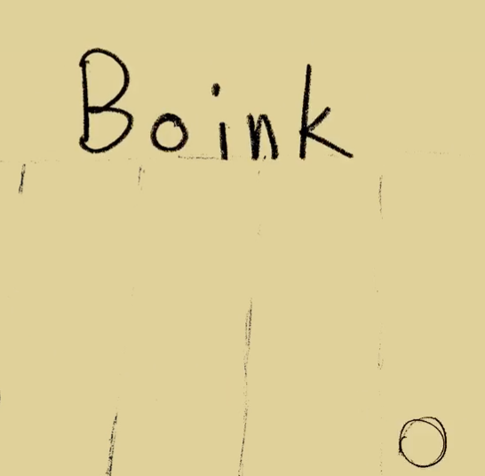

|
|
The Porcelain Man |
Wrote and Directed this piece with Rebecca Photopoulos |
Musicless Music Video |
|  |
Used Pro Tools to create a completely new audio experience for the Lil Nas X song "Old Town Road by using foley and sound libraries |
First Hand-Drawn Animation |
|  |
Learned about squash and stretch animation using pencil then scanning the drawings and organizing them in Photoshop |
Humber Program Admission Video |
The video that got me accepted into the film and media program at Humber |